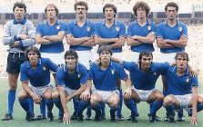
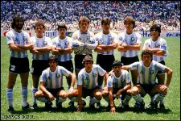
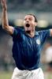
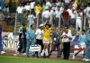
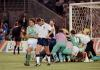
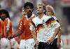
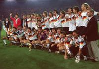
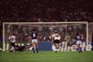
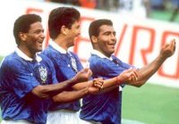
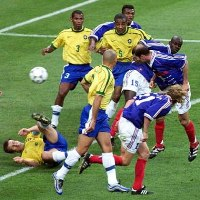

Moje 7. Svetsko Prvenstvo
Lagao bih da kazem da se secam Argentine '78. Spanija '82 je vec potpuno druga prica. Tada sam samo naslucivao ono sto ce me '86 pogoditi kao grom iz vedra neba, magija Svetskog Prvenstva u fudbalu.
Nazad na 1982. S obzirom na to da se ovog prvenstva secam samo u fragmentima i kroz prizmu razocaranja koje se osecalo u vazduhu nakon nesrecnog poraza od domacina, Spanije, i ispadanja u ranoj fazi takmicenja, osvrt na ovo prvenstvo je najkraci. Samo slika ekipe pobednika, Italije, mozda i najjace evropske ekipe svih vremena.
Prosle su 4 godine i decak od 8 godina postao je decak od 12. A to su vec godine za ozbiljno lozenje. Album skoro popunjen, a cinjenica da na prvenstvu nema nase reprezentacije nije me ni najmanje omela u nameri da pratim sto je moguce vise meceva. Koliko sam samo puta navijao sat i sa starijim bratom gledao utakmice koje su pocinjale posle ponoci. I kako su mi samo super izgledali puni stadioni i, po prvi put na tom prvenstvu vidjeni, talasi.
A prvenstvo, nikad ludje. Argentina sa Maradonom u najstrasnijem naponu. I klasicno finale protiv Nemacke. Tada sam definitivno zavoleo fudbal.
4 godine kasnije bio sam vec srednjoskolac. Prvenstvo u komsiluku, Italija, sve sa talentovanim SFRJ timom. Pocetak za pamcenje: na otvaranju prvenstva Kamerun pobedjuje zvanicnog svetskog prvaka Argentinu i nagovestava ludilo koje je usledilo. Domacin jak, Toto Skilaci trpa nemilosrdno, skoro kao Paolo Rosi 8 godina ranije. Desetak dana nakon pocetka sam otisao u Englesku, na letnju skolu jezika, i tamo doziveo nekoliko velikih fudbalskih zadovoljstava.
Prvo, da gledam mec 1/8 finala, FSJ-Spanija, sa Spancima (i Spanjolkama), veliki revans za moja prva secanja na Spaniju '82. Ah, kakvo zadovoljenje! Nisam preterano verovao u nasu reprezentaciju, jer je Osimova koncepcija bila isuvise konzervativna za moj fudbalski ukus, a generacija "Cileanaca" isuvise talentovana da bi grejala klupu. Iako nisam veliki ljubitelj DSPa (Dragan Stojkovic Piksi), tada me bas obradovao.
Drugo zadovoljstvo bilo je gledati Argentinu kako iskusno izbacuje Brazil jos u 1/8 finala. Maradona u brazilskom dresu - podjebavanje za fudbalsku istoriju! I najava neceg velikog, 1/4 finale protiv zvanicnog svetskog prvaka. Tom mecu moze se posvetiti citav blog (ne post, blog!), njegovim raznim aspektima i znacenjima. Argentina je prosla u polufinale, gde ih je cekao domacin, Italija - klasik derbi svetskih prvenstava. Kakva borba! Argentina u finalu, odbranama Goycoechea-e.
Trece, ucesce Engleske na SP i neopisiva atmosfera kako je Engleska napredovala ka polufinalu. Pobede protiv Belgije, golom David Plata u produzetku, a zatim i protiv velikog iznenadjenja Kameruna. U kraljevstvu je zavladala euforija pred mec sa Nemciima. Mnogi su se prisecali prethodnih duela velikih rivala. Ipak, Nemci su pokazali vise karaktera i prosli u finale, za reprizu finala iz Mexica '86. Za utehu Englezi osvajaju bronzu u susretu sa sagorelim Italijanima.
Finale donosi veliku borbu, ali i pravedan rasplet. Iako mozda bolja u ovom mecu Argentina ne uspeva da bude prva vanevropska reprezentacija da osvoji SP u Evropi. Iz sumnjivog penala Breme sigurno pogadja, nekih 10tak minuta pre kraja, i sve je gotovo. Nemacka je prvak, zasluzeno.
SFRJ se u naredne cetri godine raspada, a sledece SP se odrzava na nelogicnom mestu, SAD (ili USA, kako kome draze). Naravno, ponovo ne ucestvujemo.
Tada sam vec bio student BUa i spremao prve ispite. Ipak, prioriteti moraju da se znaju, tako da sam odgledao skoro sve utakmice SPa (i uprkos tome uspesno zavrsio prvu godinu studija, na svezinu). Meni ce ostati u secanju nastupi ekipa sa Balkana: Rumunije i Bugarske, kao i luda igra Svedske (sve sa najludjim golmanom, Ravellijem). Brazil jak, skoro na domacem terenu. FIFA, banditska organizacija kakva jeste, izbacuje sa prvenstva Maradonu (zbog navodnog dopingovanja), sjebavsi potencijalno uzbudljivu zavrsnicu. Brazil prvak, bez iznenadjenja.
Francuska 1998. Ovo prvenstvo ce dugo pamtiti dve evropske zemlje, Francuska i Hrvatska. Prva, domacin, sklopila je odlican tim, na celu sa jednim od najboljih igraca svih vremena, Zinedine Zidanom. Druga, komsijska, spoj zelje i iskustva, krcila je sebi put samouvereno i znalacki, nadahnuto, cak, na momente. Nije da mi nismo imali svoje sanse. Eh, da je samo Mijatovic pogodio onaj penal protiv Holandije... ali, nije. Francuska se provukla kroz 1/8 finala pored Paragvaja, golom u produzetku (pored ludog Chilaverta na golu, Paragvaj sigurno ne bi ispao na penale), zatim kroz 1/4 finale protiv Italije (na penale, posle nevidjenog jednocasovnog bunkera Italije sa igracem manje). Francuska se, realno, provukla i kroz polufinale protiv razgoropadjene Hrvatske. Ali, finale, finale je bilo posebna prica. Odvaljivanje Brazila, 3:0, za ono sto je meni izgledalo kao velika FIFA namestaljka. Ipak, lepa fotografija Zidana, dok postize svoj drugi gol glavom na mecu.
O Svetskom Prvenstvu u J.Koreji/Japanu necu da pisem mnogo. Po svemu najgore prvenstvo od kada ja pratim fudbal (siguran sam da se Turci ne slazu). FIFA je malo preterala u ambiciji da fudbal postane globalna opsesija. Ipak, bilo je nekoliko zanimljivih prizora.
Francuzi su se obrukali, ispali bez postignutog gola, jos u grupi. Ja navijao za Senegal. Pobedio, ipak, Brazil. Ne secam se da je nekada losiji tim igrao u finalu od Nemacke na ovom SP. Brazil je imao i bolju podrsku sa tribina :)
4 godine kasnije, evo, zivim i radim u Svedskoj, a SP ponovo stize u Evropu. I to, ni manje, ni vise, nego u Nemacku. Moram priznati da ocekujem odlicno takmicenje. Svakako, mnoge odlicne utakmice. I mi smo ponovo tamo. Na zalost, ponovo sa tudjom himnom. Zbog ovog i jos mnogo razloga od nasih ne ocekujem mnogo, par dobrih igara u grupi - puna kapa. Ali, lozenje je ponovo tu. Nervoza raste, sve dok se ne otvori prvo hladno pivo, a nervoza se pretvori u euforiju, ponekad i u ekstazu - magija SP.
 RSS feed
RSS feed
 sadržaji se objavljuju pod
sadržaji se objavljuju pod